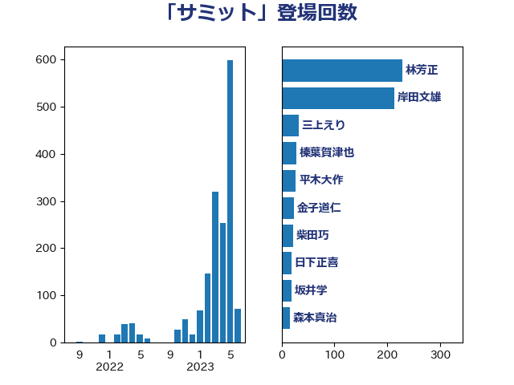

単語「サミット」

| 林芳正 | 自由民主党 | 228 回 |
| 岸田文雄 | 自由民主党 | 213 回 |
| 三上えり | 立憲民主党 | 32 回 |
| 榛葉賀津也 | 国民民主党 | 28 回 |
| 平木大作 | 公明党 | 27 回 |
| 金子道仁 | 日本維新の会 | 24 回 |
| 柴田巧 | 日本維新の会 | 22 回 |
| 日下正喜 | 公明党 | 19 回 |
| 坂井学 | 自由民主党 | 19 回 |
| 森本真治 | 立憲民主党 | 16 回 |
| 鈴木俊一 | 自由民主党 | 15 回 |
| 羽田次郎 | 立憲民主党 | 15 回 |
| 徳永久志 | 無所属 | 15 回 |
| 福山哲郎 | 立憲民主党 | 13 回 |
| 斉藤鉄夫 | 公明党 | 13 回 |
| 宮口治子 | 立憲民主党 | 13 回 |
| 辻元清美 | 立憲民主党 | 12 回 |
| 篠原豪 | 立憲民主党 | 12 回 |
| 武井俊輔 | 自由民主党 | 12 回 |
| 高橋光男 | 公明党 | 11 回 |
| 谷公一 | 自由民主党 | 11 回 |
| 森屋宏 | 自由民主党 | 11 回 |
| 柚木道義 | 立憲民主党 | 11 回 |
| 吉良州司 | 無所属 | 11 回 |
| 加藤勝信 | 自由民主党 | 11 回 |
| 高良鉄美 | 無所属 | 10 回 |
| 西村康稔 | 自由民主党 | 10 回 |
| 田名部匡代 | 立憲民主党 | 10 回 |
| 吉田宣弘 | 公明党 | 10 回 |
| 福重隆浩 | 公明党 | 9 回 |
| 玄葉光一郎 | 立憲民主党 | 9 回 |
| 松野博一 | 自由民主党 | 9 回 |
| 平林晃 | 公明党 | 9 回 |
| 山本博司 | 公明党 | 9 回 |
| 小池晃 | 日本共産党 | 9 回 |
| 加田裕之 | 自由民主党 | 9 回 |
| 茂木敏充 | 自由民主党 | 8 回 |
| 源馬謙太郎 | 立憲民主党 | 8 回 |
| 泉健太 | 立憲民主党 | 8 回 |
| 横沢高徳 | 立憲民主党 | 8 回 |
| 松沢成文 | 日本維新の会 | 8 回 |
| 山添拓 | 日本共産党 | 8 回 |
| 山口壯 | 自由民主党 | 8 回 |
| 金城泰邦 | 公明党 | 7 回 |
| 稲津久 | 公明党 | 7 回 |
| 神谷宗幣 | 参政党 | 7 回 |
| 武見敬三 | 自由民主党 | 7 回 |
| 松川るい | 自由民主党 | 7 回 |
| 岩本剛人 | 自由民主党 | 7 回 |
| 青柳仁士 | 日本維新の会 | 6 回 |
| 萩生田光一 | 自由民主党 | 6 回 |
| 笠井亮 | 日本共産党 | 6 回 |
| 渡辺創 | 立憲民主党 | 6 回 |
| 梅村聡 | 日本維新の会 | 6 回 |
| 朝日健太郎 | 自由民主党 | 6 回 |
| 山口那津男 | 公明党 | 6 回 |
| 小倉將信 | 自由民主党 | 6 回 |
| 寺田稔 | 自由民主党 | 6 回 |
| 堀井巌 | 自由民主党 | 6 回 |
| 和田有一朗 | 日本維新の会 | 6 回 |
| 北村経夫 | 自由民主党 | 6 回 |
| 上杉謙太郎 | 自由民主党 | 6 回 |
| 馬場伸幸 | 日本維新の会 | 5 回 |
| 金子恵美 | 立憲民主党 | 5 回 |
| 野間健 | 立憲民主党 | 5 回 |
| 道下大樹 | 立憲民主党 | 5 回 |
| 谷合正明 | 公明党 | 5 回 |
| 西村智奈美 | 立憲民主党 | 5 回 |
| 舟山康江 | 国民民主党 | 5 回 |
| 竹内真二 | 公明党 | 5 回 |
| 石川博崇 | 公明党 | 5 回 |
| 田村智子 | 日本共産党 | 5 回 |
| 永岡桂子 | 自由民主党 | 5 回 |
| 櫛渕万里 | れいわ新選組 | 5 回 |
| 伊藤達也 | 自由民主党 | 5 回 |
| 仁比聡平 | 日本共産党 | 5 回 |
| 高木啓 | 自由民主党 | 4 回 |
| 音喜多駿 | 日本維新の会 | 4 回 |
| 鈴木敦 | 国民民主党 | 4 回 |
| 篠原孝 | 立憲民主党 | 4 回 |
| 空本誠喜 | 日本維新の会 | 4 回 |
| 石井苗子 | 日本維新の会 | 4 回 |
| 石井啓一 | 公明党 | 4 回 |
| 柳ヶ瀬裕文 | 日本維新の会 | 4 回 |
| 末松信介 | 自由民主党 | 4 回 |
| 新妻秀規 | 公明党 | 4 回 |
| 斎藤アレックス | 国民民主党 | 4 回 |
| 岩渕友 | 日本共産党 | 4 回 |
| 山口晋 | 自由民主党 | 4 回 |
| 宮本徹 | 日本共産党 | 4 回 |
| 大塚耕平 | 国民民主党 | 4 回 |
| 勝部賢志 | 立憲民主党 | 4 回 |
| 前原誠司 | 国民民主党 | 4 回 |
| 佐藤啓 | 自由民主党 | 4 回 |
| 鬼木誠 | 立憲民主党 | 3 回 |
| 西村明宏 | 自由民主党 | 3 回 |
| 西岡秀子 | 国民民主党 | 3 回 |
| 石川香織 | 立憲民主党 | 3 回 |
| 田島麻衣子 | 立憲民主党 | 3 回 |
| 渡辺周 | 立憲民主党 | 3 回 |
| 浜口誠 | 国民民主党 | 3 回 |
| 浅野哲 | 国民民主党 | 3 回 |
| 水野素子 | 立憲民主党 | 3 回 |
| 横山信一 | 公明党 | 3 回 |
| 松野明美 | 日本維新の会 | 3 回 |
| 松本尚 | 自由民主党 | 3 回 |
| 松本剛明 | 自由民主党 | 3 回 |
| 木原誠二 | 自由民主党 | 3 回 |
| 後藤茂之 | 自由民主党 | 3 回 |
| 島尻安伊子 | 自由民主党 | 3 回 |
| 山本有二 | 自由民主党 | 3 回 |
| 小西洋之 | 立憲民主党 | 3 回 |
| 宮路拓馬 | 自由民主党 | 3 回 |
| 宮崎勝 | 公明党 | 3 回 |
| 太栄志 | 立憲民主党 | 3 回 |
| 原口一博 | 立憲民主党 | 3 回 |
| 佐藤英道 | 公明党 | 3 回 |
| 伊藤信太郎 | 自由民主党 | 3 回 |
| 丸川珠代 | 自由民主党 | 3 回 |
| 中川康洋 | 公明党 | 3 回 |
| 高橋はるみ | 自由民主党 | 2 回 |
| 高木かおり | 日本維新の会 | 2 回 |
| 高市早苗 | 自由民主党 | 2 回 |
| 階猛 | 立憲民主党 | 2 回 |
| 阿達雅志 | 自由民主党 | 2 回 |
| 鈴木馨祐 | 自由民主党 | 2 回 |
| 鈴木義弘 | 国民民主党 | 2 回 |
| 野村哲郎 | 自由民主党 | 2 回 |
| 野上浩太郎 | 自由民主党 | 2 回 |
| 遠藤良太 | 日本維新の会 | 2 回 |
| 辻清人 | 自由民主党 | 2 回 |
| 赤澤亮正 | 自由民主党 | 2 回 |
| 赤池誠章 | 自由民主党 | 2 回 |
| 赤松健 | 自由民主党 | 2 回 |
| 藤巻健太 | 日本維新の会 | 2 回 |
| 臼井正一 | 自由民主党 | 2 回 |
| 緒方林太郎 | 無所属 | 2 回 |
| 紙智子 | 日本共産党 | 2 回 |
| 米山隆一 | 立憲民主党 | 2 回 |
| 石川昭政 | 自由民主党 | 2 回 |
| 石垣のりこ | 立憲民主党 | 2 回 |
| 石井正弘 | 自由民主党 | 2 回 |
| 矢倉克夫 | 公明党 | 2 回 |
| 玉木雄一郎 | 国民民主党 | 2 回 |
| 漆間譲司 | 日本維新の会 | 2 回 |
| 滝波宏文 | 自由民主党 | 2 回 |
| 渡辺博道 | 自由民主党 | 2 回 |
| 清水貴之 | 日本維新の会 | 2 回 |
| 浅田均 | 日本維新の会 | 2 回 |
| 河西宏一 | 公明党 | 2 回 |
| 池畑浩太朗 | 日本維新の会 | 2 回 |
| 根本匠 | 自由民主党 | 2 回 |
| 村田享子 | 立憲民主党 | 2 回 |
| 杉田水脈 | 自由民主党 | 2 回 |
| 杉本和巳 | 日本維新の会 | 2 回 |
| 本庄知史 | 立憲民主党 | 2 回 |
| 早坂敦 | 日本維新の会 | 2 回 |
| 島村大 | 自由民主党 | 2 回 |
| 岸真紀子 | 立憲民主党 | 2 回 |
| 岸信千世 | 自由民主党 | 2 回 |
| 山田勝彦 | 立憲民主党 | 2 回 |
| 山岸一生 | 立憲民主党 | 2 回 |
| 山下芳生 | 日本共産党 | 2 回 |
| 尾身朝子 | 自由民主党 | 2 回 |
| 小沼巧 | 立憲民主党 | 2 回 |
| 小川淳也 | 立憲民主党 | 2 回 |
| 宮本岳志 | 日本共産党 | 2 回 |
| 大野敬太郎 | 自由民主党 | 2 回 |
| 大西健介 | 立憲民主党 | 2 回 |
| 堀場幸子 | 日本維新の会 | 2 回 |
| 國重徹 | 公明党 | 2 回 |
| 國場幸之助 | 自由民主党 | 2 回 |
| 嘉田由紀子 | 無所属 | 2 回 |
| 和田政宗 | 自由民主党 | 2 回 |
| 吉川ゆうみ | 自由民主党 | 2 回 |
| 古庄玄知 | 自由民主党 | 2 回 |
| 北神圭朗 | 無所属 | 2 回 |
| 務台俊介 | 自由民主党 | 2 回 |
| 佐藤正久 | 自由民主党 | 2 回 |
| 佐藤公治 | 立憲民主党 | 2 回 |
| 住吉寛紀 | 日本維新の会 | 2 回 |
| 伊東信久 | 日本維新の会 | 2 回 |
| 今井絵理子 | 自由民主党 | 2 回 |
| 仁木博文 | 無所属 | 2 回 |
| 上田清司 | 国民民主党 | 2 回 |
| こやり隆史 | 自由民主党 | 2 回 |
| 齋藤健 | 自由民主党 | 1 回 |
| 黄川田仁志 | 自由民主党 | 1 回 |
| 鰐淵洋子 | 公明党 | 1 回 |
| 高村正大 | 自由民主党 | 1 回 |
| 青柳陽一郎 | 立憲民主党 | 1 回 |
| 青島健太 | 日本維新の会 | 1 回 |
| 青山繁晴 | 自由民主党 | 1 回 |
| 阿部知子 | 立憲民主党 | 1 回 |
| 阿部司 | 日本維新の会 | 1 回 |
| 鎌田さゆり | 立憲民主党 | 1 回 |
| 鈴木貴子 | 自由民主党 | 1 回 |
| 鈴木英敬 | 自由民主党 | 1 回 |
| 金村龍那 | 日本維新の会 | 1 回 |
| 野田聖子 | 自由民主党 | 1 回 |
| 野田佳彦 | 立憲民主党 | 1 回 |
| 輿水恵一 | 公明党 | 1 回 |
| 西田実仁 | 公明党 | 1 回 |
| 葉梨康弘 | 自由民主党 | 1 回 |
| 菅義偉 | 自由民主党 | 1 回 |
| 若宮健嗣 | 自由民主党 | 1 回 |
| 緑川貴士 | 立憲民主党 | 1 回 |
| 穀田恵二 | 日本共産党 | 1 回 |
| 秋本真利 | 無所属 | 1 回 |
| 福島みずほ | 社会民主党 | 1 回 |
| 神田潤一 | 自由民主党 | 1 回 |
| 礒崎哲史 | 国民民主党 | 1 回 |
| 石破茂 | 自由民主党 | 1 回 |
| 石橋林太郎 | 自由民主党 | 1 回 |
| 石川大我 | 立憲民主党 | 1 回 |
| 石井章 | 日本維新の会 | 1 回 |
| 石井拓 | 自由民主党 | 1 回 |
| 盛山正仁 | 自由民主党 | 1 回 |
| 猪瀬直樹 | 日本維新の会 | 1 回 |
| 牧山ひろえ | 立憲民主党 | 1 回 |
| 片山大介 | 日本維新の会 | 1 回 |
| 浦野靖人 | 日本維新の会 | 1 回 |
| 浜田聡 | NHK党 | 1 回 |
| 浜地雅一 | 公明党 | 1 回 |
| 江藤拓 | 自由民主党 | 1 回 |
| 武部新 | 自由民主党 | 1 回 |
| 櫻井周 | 立憲民主党 | 1 回 |
| 森山浩行 | 立憲民主党 | 1 回 |
| 森屋隆 | 立憲民主党 | 1 回 |
| 梅谷守 | 立憲民主党 | 1 回 |
| 柘植芳文 | 自由民主党 | 1 回 |
| 松山政司 | 自由民主党 | 1 回 |
| 松原仁 | 立憲民主党 | 1 回 |
| 杉尾秀哉 | 立憲民主党 | 1 回 |
| 本田顕子 | 自由民主党 | 1 回 |
| 星北斗 | 自由民主党 | 1 回 |
| 志位和夫 | 日本共産党 | 1 回 |
| 徳永エリ | 立憲民主党 | 1 回 |
| 後藤祐一 | 立憲民主党 | 1 回 |
| 平山佐知子 | 無所属 | 1 回 |
| 岩谷良平 | 日本維新の会 | 1 回 |
| 岡本三成 | 公明党 | 1 回 |
| 山谷えり子 | 自由民主党 | 1 回 |
| 山田賢司 | 自由民主党 | 1 回 |
| 山本順三 | 自由民主党 | 1 回 |
| 山崎正恭 | 公明党 | 1 回 |
| 小林鷹之 | 自由民主党 | 1 回 |
| 小林一大 | 自由民主党 | 1 回 |
| 小宮山泰子 | 立憲民主党 | 1 回 |
| 宮崎雅夫 | 自由民主党 | 1 回 |
| 奥野総一郎 | 立憲民主党 | 1 回 |
| 太田房江 | 自由民主党 | 1 回 |
| 大島敦 | 立憲民主党 | 1 回 |
| 大家敏志 | 自由民主党 | 1 回 |
| 塩田博昭 | 公明党 | 1 回 |
| 塩村あやか | 立憲民主党 | 1 回 |
| 城内実 | 自由民主党 | 1 回 |
| 土田慎 | 自由民主党 | 1 回 |
| 吉田久美子 | 公明党 | 1 回 |
| 吉田はるみ | 立憲民主党 | 1 回 |
| 八木哲也 | 自由民主党 | 1 回 |
| 伊藤岳 | 日本共産党 | 1 回 |
| 伊藤孝江 | 公明党 | 1 回 |
| 伊藤孝恵 | 国民民主党 | 1 回 |
| 伊波洋一 | 無所属 | 1 回 |
| 今枝宗一郎 | 自由民主党 | 1 回 |
| 井上哲士 | 日本共産党 | 1 回 |
| 五十嵐清 | 自由民主党 | 1 回 |
| 中西祐介 | 自由民主党 | 1 回 |
| 中村裕之 | 自由民主党 | 1 回 |
| 中山展宏 | 自由民主党 | 1 回 |
| 上田勇 | 公明党 | 1 回 |
| 三宅伸吾 | 自由民主党 | 1 回 |
| ながえ孝子 | 無所属 | 1 回 |